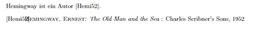

Untitled
Bugs
Die bisher identifizierten Fehler scheinen überwiegend abhängig von der Version der lokalen Quarto-Datei bzw. der verwendeten Pakete zu sein. Diese Fehler sind in der Mehrzahl für sich genommen wenig problematisch, jedoch müssen neue Fehler jederzeit erwartet werden. Dies ist insbesondere für die Nachnutzungsphase problematisch, wenn ein fehlerfreies Funktionieren nur für einen definierten Versionsstand zugesichert werden kann.
fig-align: right + #fig-ID
Problembeschreibung: Eine Grafik mit #fig-ID führt beim Rendern eines PDF zum Absturz, wenn die Ausrichtung global oder elementweise auf right gesetzt ist.
Hinweis: Problem scheint abhängig von der Quarto-Version zu sein. Tritt auf mit: 1.4.542
Reproduktion des Problems:
- nachfolgende Grafik auskommentieren (markieren & Strg + # drücken) und im YAML-Header
format: pdfsetzen.
- nachfolgende Grafik auskommentieren und im YAML-Header
fig-align: rightlöschen (oder auskommentieren) undformat: pdfsetzen.
Einbindung von jpg aus dem Internet
Problembeschreibung: Ein jpg aus dem Internet einzubinden, führt beim Rendern eines PDF zum Absturz. (Ich kann mich nicht mehr erinnern, ob nur das Bild nicht eingebunden wurde oder das Rendern abbrach - das ist zufällig bei der Ursachenforschung für einen anderen Fehler passiert.)
Hinweis: Problem scheint abhängig von der Quarto-Version zu sein. Tritt auf mit: 1.3.450 (Florian Bagemihl)
Reproduktion des Problems: Im YAML-Header format: html durch format: pdf und fig-align: right durch fig-align: left ersetzen.

Tabellen (longtables) in 2 Spalten mit Beschriftungen
Problembeschreibung: Tabellen (longtables) in 2 Spalten mit Beschriftungen führen beim Export in PDF zum Absturz.(abhängig vom System, Ursache unklar - bei mir geht es nicht, bei Florian trotz möglichst identischer Dateiversionen aber schon.)
Reproduktion des Problems: nachfolgende Div auskommentieren und im YAML-Header format: pdf setzen.
Fehlende Implementierung von Funktionen für PDF
Das Problem bei diesen Beispielen ist vor allem, dass diese nur durch Versuch und Irrtum identifiziert wurden und die Ursachenforschung Zeit verschlingt.
Von der globalen Definition abweichende Ausrichtung von bilder
Problembeschreibung: Wird die Ausrichtung von bilder global im YAML-Header definiert fig-align, ist eine elementweise abweichende Ausrichtung von bilder in HTML möglich, in PDF aber nicht.
Hinweis: Könnte auch ein versionsspezifischer Bug sein
Reproduktion des Problems: Im YAML-Header format: html ersetzen durch format: pdf. Im PDF sind beide bilder rechts ausgerichtet.
Lizenzkey
Problembeschreibung: Im YAML-Header gesetzter Lizenzhinweis license: CC-BY erscheint nicht im PDF (betrifft auch individuell konfigurierte Lizenz). Hinweis: Den Lizenzhinweis setzen wir manuell, um den Vorgaben für OER hinsichtlich Position und Gestaltung zu entsprechen.
Marc hat auf GitHub den Hinweis gefunden, dass die Funktion bislang nur für HTML implementiert ist und wohl auch andere Anhänge betrifft.
https://github.com/quarto-dev/quarto-cli/discussions/3015
Reproduktion des Problems: Im YAML-Header format: html ersetzen durch format: pdf. Im HTML erscheint am Ende des Dokuments ein Abschnitt “Reuse”, in PDF nicht.
Unterschiedliche Gestaltung von HTML und PDF
Um ein einheitliches Erscheinungsbild von HTML und PDF zu gewährleisten, muss teilweise auf formatspezifische Optionen im YAML-Header zurückgegriffen werden. Das ist im Einzelfall kein Problem, in der Summe führt das aber zu umständlich handzuhabenden Dateien, weil die QMD unübersichtlicher wird und beim Wechsel des Exportformats viele Zeilen aus- und einkommentiert werden müssen.
Hinweis: Marc kann sicherlich noch Beispiele ergänzen.
BibLaTeX vs. CSL
Problembeschreibung: Das Erscheinungsbild des Quellenverzeichnisses wird vom gewählten Zitierstil bestimmt. Beim Export in PDF kann der Titel des Quellenverzeichnisses per Option eingestellt werden.
Hinweis: In diesem Beispiel geht es nicht um einen bestimmten Zitierstil, sondern um das Zusammenspiel der Konfigurationsmöglichkeiten in beiden Formaten.
format:
pdf:
cite-method: biblatex
biblio-style: authoryear
biblio-title: QuellenDie cite-method: biblatex ist in HTML nicht verfügbar. Beim Export in HTML muss dies über eine CSL-Datei konfiguriert werden. Mit einer CSL für den Zitierstil alpha wird aber das Quellenverzeichnis in PDF nicht korrekt gesetzt.

Reproduktion des Problems: Im YAML-Header # csl: din-1505-2-alphanumeric.csl auskommentieren und format: pdf setzen. Wird die Quelle (Hemingway 1952) zitiert, erscheint am Dokumentenende ein falsch gesetztes Quellenverzeichnis.
Conditional Content
Problembeschreibung: Grundsätzlich können mit Conditional Content viele Unterschiede zwischen HTML und PDF ausgebügelt werden. Die QMD-Datei wird dadurch aber unübersichtlich.
Beispiel angepasstes Quellenverzeichnis in HTML
:::{.content-visible when-format="html"}
# Quellenverzeichnis {-}
::: {#refs}
:::
:::Beispiel Textfarbe
Markdown unterstützt die farbige Hervorhebung von Text nicht direkt.
Für den Export in HTML muss der andersfarbige Text in
<span>Beispieltext</span>gesetzt werden. Innerhalb des führenden Einschubs kann die Farbe definiert werden \(<span style="color:blue">\) blauer Text. Dies funktioniert aber nicht beim Export in PDF.Für den Export als PDF muss der LaTeX-Befehl
\textcolor{blue}{blauen Text}verwendet werden. Dessen Ausführung erzeugt . Das funktioniert aber nicht beim Export in HTML.
Formatübergreifend ist dies mit Conditional Content möglich. Bedingte Absätze werden von ::: eingeschlossen eingefügt:
::: {.content-visible when-format="html"}
Erscheint nur in HTML.
:::::: {.content-visible when-format="pdf"}
Erscheint nur in PDF.
:::- Dieser Absatz ist in HTML und in PDF blau.
Bedingter Text kann auch innerhalb einer Zeile erzeugt werden. So ist dieser Text im PDF und in HTML rot. Bedingte Inhalte können positiv oder negativ definiert werden:
[Erscheint in HTML]{.content-visible when-format="html"}
[Erscheint nicht in PDF]{.content-visible unless-format="pdf"}
SVG und GIF
Problembeschreibung: Die Formate SVG und GIF werden von LaTeX bzw. PDF nicht unterstützt. Das gewünschte Verhalten ist, dass ein PNG erzeugt und ins PDF gesetzt wird. Beim Export in PDF stürzt der Prozess mit SVG ab, mit GIF beginnt zunächst ein Update “updating tlmgr, updating existing packages”, dann bricht der Prozess ab.
Vektorbilder im Format SVG: Um Vektorbilder zu verarbeiten, wird die Bibliothek
Librsvgbenötigt. Die Installation ist je nach Betriebssystem unterschiedlich und erfordert unter Windows weitere Schritte. Siehe: Quarto: PDF Format Improvements. SVG Imagesbilder im Format GIF : Das PDF-Format unterstützt animierte Bilddateien nicht bzw. nur in bestimmten Kombinationen aus Renderengine und PDF Reader. Quartos Standardengine TinyteX unterstützt animierte Bilddateien nicht.
Reproduktion des Problems: Nachfolgende bilder auskommentieren und im YAML-Header format: pdf setzen.